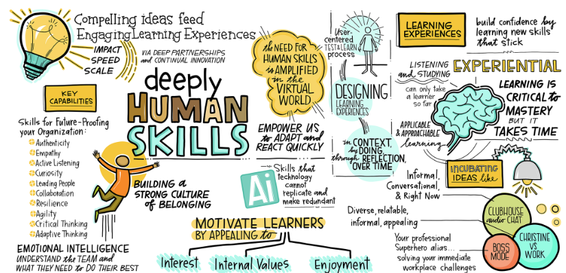

The Role of the Human Resource Department
The focus for Human Capital as a function is to enable business through people. This spans facilitation and support to the management and line managers in maintaining and developing a strong corporate culture, determining appropriate organisation and team structures, staffing through competence mapping, talent development, recruitment, replacement and exit as well as performance measurement, improvement and rewards.
Focus Areas
The vision of the Human Resource function is to enable business success through people. Its key objectives are to facilitate, advise, and support Company Management, department leaders, and employees in the following areas:
- Building and sustaining a strong corporate culture.
- Establishing sustainable organizational capabilities and team structures, including recruitment, retention, replacement, and exit processes.
- Developing people through robust frameworks for competence management, talent development, and performance management.
- Providing fair, competitive, and consistent compensation and benefits to all employees.
- Delivering efficient transactional, administrative, and logistical support for people-related processes across all operational locations.
The Human Resource function is committed to developing and maintaining effective processes that serve the best interests of the Company, its business operations, project management, and employees at all times.
Staff guidelines
An employee's duties and rights in the employment relationship are defined by their employment contract, local legislation, and any applicable collective bargaining agreements (CBAs). Additionally, certain aspects of the working relationship may be governed by company practices, terms, and conditions that are not explicitly regulated by law.
Onboarding
What is onboarding?
Onboarding is the process of welcoming and integrating new employees into the organization and its culture.
An effective onboarding experience supports the following goals:
- Builds trust and fosters a strong relationship between the leader and the new employee.
- Helps the new employee transition smoothly and contribute effectively to their role.
- Increases the employee’s confidence and comfort in their new position.
- Reinforces the employee’s decision to join the organization.
- Boosts early productivity.
- Promotes long-term commitment and engagement.
Learning & Development
At STAC Marine Offshore, we embrace a culture built on creativity and curiosity. We are committed to supporting your personal growth and providing opportunities for advancement across our global organization. Our goal is to equip you with the tools and training that will enrich both your professional journey and personal development. On this page, you’ll find information and resources designed to help you continue learning and evolving.
Human Skills
Here, you’ll find valuable resources on various human skills—often referred to as soft skills or interpersonal skills. These abilities play a vital role in strengthening relationships and fostering effective collaboration. Human skills are essential for fostering positive interactions and play a key role in achieving successful teamwork.
Coaching & Mentoring
When practiced effectively, coaching and mentoring can be powerful tools for driving personal growth, team development, and overall business success. These learning approaches not only enhance skills but also boost employee engagement and satisfaction. To explore more about coaching and mentoring, and to strengthen your capabilities in this area, we invite you to explore the resources provided below.
Feedback
Feedback is a cornerstone of effective leadership and communication. It fosters transparency, supports continuous improvement, and strengthens workplace relationships. Without feedback, we miss opportunities to learn, grow, and help others do the same. By developing your ability to give and receive constructive feedback, you contribute to both your own growth and the success of those around you. Discover practical tips and techniques for delivering impactful feedback in the links below.
Listening
Listening is at the heart of all successful communication. Without active listening, messages can easily be misunderstood, leading to miscommunication. Being fully present, attentive, and asking thoughtful follow-up questions are key to meaningful dialogue. If you’d like to sharpen your communication skills and become a more effective listener, explore the resources on active listening available below.